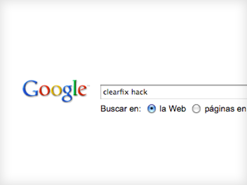

clearfix
El clearfix es un hack bastante extendido que no siempre se usa del todo bien. La teoría es añadir una serie de reglas css que juegan con el contenedor de los elementos flotados.
En su versión revisitada queda más o menos así
.clearfix:after {
content: ".";
clear: both;
height: 0;
visibility: hidden;
display: block;
}
.clearfix { display: inline-block; }
/* Start Commented Backslash Hack \*/
* html .clearfix, * html .clearfix * {height: 1%;}
.clearfix { display: block; }
/* Close Commented Backslash Hack */
Esta técnica cumple su función simplemente añadiendo una clase. El problema es que cuando no tienes muy claro dónde y por qué usarla te encuentras con htmls con clearfixes a 4 y 5 niveles :)
La decisión aquí sería aplicar el hack en una clase genérica o a elementos concretos. Si lo aplicamos de forma genérica cuando queramos dejar de usarlo tenemos que tocar también el html para eliminar la clase.
Un ejemplito de clearfix por aquí.